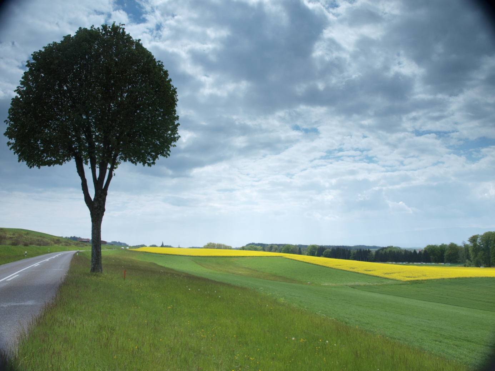

Le chemin vers l’acceptation
L’expérience première est toujours l’expérience de la dualité, mais celle-ci est inséparable de l’unité. La dualité est conflit et bonheur, chaos et harmonie, souffrance et plaisir, mal et bien, ordre et désordre… etc. Notre question sera : comment être sur le chemin de la délivrance et de l’unité (synonyme : la non-dualité) ? Commençons par faire une distinction entre le monde extérieur et le monde intérieur.
Le monde extérieur, le monde physique, la nature sont sans cesse soumis à deux lois : le changement et la différence.
La différence signifie que tout est unique. Il en résulte qu’aucune comparaison n’est possible et que les jugements de valeur sont dénués de tout fondement. Différence ne signifie pas séparation, car tout est interdépendant et connecté par une force sous-jacente. La différence est dans les choses et dans l’apparence, tandis que l’unité, la non-dualité est dans la réalité. Or, l’ego voudrait tant que tout soit comme lui, voudrait faire du même, créant donc conflit et souffrance.
Le changement (l’impermanence) la deuxième loi de la nature, a comme conséquence, qu’il ne peut y avoir aucune certitude quant à l’avenir, puisque tout change irrémédiablement. Il s’en suit que l’insécurité fait partie de nos vies. Or, l’ego fera tout pour que ça dure ; ce sera une nouvelle source de souffrance, car la déception sera souvent au rendez-vous. Le refus du changement et de la différence va créer la dualité. Refuser, c’est-à-dire non à ce qui est, dire non au changement et non à la différence. L’homme est fait de refus.
Dans le monde intérieur, toutes les lois de la nature sont remises en jeu par l’ego, qui nous fait ressentir constamment nos oppositions, nos contradictions, nos doutes, nos ombres. Le maître d’œuvre de l’ego est le mental, dont l’aspect intellectuel est la pensée, l’aspect affectif, l’émotion et l’aspect dynamique, le désir. L’ego et le mental sont faits de refus et jouent le rôle de magiciens désirant faire apparaître comme réel, ce qui n’existe plus en réalité. Ils sont les créateurs de la dualité, donc de nos souffrances, se manifestant toujours par des réactions émotionnelles négatives. Le mécanisme est simple : le refus, le déni, la non-acceptation de la réalité créent une réaction, qui déclenche l’émotion négative (colère, déception, dégoût, insatisfaction, haine, tristesse, dépression, etc.). Ces émotions, disposant d’une énergie puissante, vont annihiler toutes réflexions. Rappelons que l’ego n’est jamais satisfait, que tout ce qui ne va pas dans le sens de son plaisir est refusé. Il veut tout, tout de suite, tout ensemble et surtout que cela dure. Or, l’univers dira souvent : non, il faut attendre et selon la deuxième loi de la nature, cela ne durera pas.
Le maître mot de nos vies est donc l’acceptation. L’acceptation, c’est ce qui dissout l’ego et la dualité. C’est le fondement de la non-dualité. Pour vous libérer de la souffrance, il faut vous libérer de la dualité. Comment ? En acceptant la dualité (du monde extérieur). L’absolu, l’infini, la réalité ne se trouvent que dans le présent. Ici et maintenant, c’est l’unité. Si vous êtes dans le maintenant, vous êtes dans la réalité. Seul maintenant est réalité. Ce qui est, est ; ce qui n’est pas, n’est pas, dira le Bouddha. Mieux, et il ajoute : ceci étant, cela est ; ceci cessant, cela cesse. Rien d’autre n’est la réalité. Je suis cela et rien d’autre. En dehors de cela, nous sommes les prisonniers du mental et de l’ego. Pour s’en libérer, il faut le traquer sans merci, en le confrontant sans relâche aux faits tels qu’ils sont. De plus, vous n’avez aucun effort à faire pour connaître la réalité : la réalité est toujours là.
La réalité est ce qu’elle est et rien d’autre que ce qu’elle est.
Ce sont donc les émotions négatives, douloureuses du passé, qui agissent sur nous parce que nous ne pouvons pas leur dire oui, les accepter, et qu’ainsi ces évènements sont réprimés ou refoulés. Voici le mental : il s’exprime au conditionnel : cela aurait dû être autrement… cela ne devrait pas être… tu n’aurais pas dû… je ne devrais pas être angoissé… je n’aurais pas dû recevoir de mauvaises nouvelles. Or, seul le oui est vrai : oui je souffre ; oui je suis angoissé ; oui j’ai reçu de mauvaises nouvelles. Parce que je ne peux pas accepter l’évènement, l’émotion va naître (réaction). L’émotion n’est pas créée par le fait lui-même, aussi pénible soit-il, mais par le déni, le refus du fait. Mais aussi accepter l’émotion quand elle est là. Pourquoi ? Parce qu’elle est là, c’est la réalité du moment et elle est liée à ce moment. Si vous êtes déprimé, faites l’expérience de la dépression. À cause de la loi du changement, elle ne durera pas. L’émotion qui n’existait pas auparavant est forcément destinée à disparaître. Puisqu’elle a eu un commencement, elle doit avoir une fin. Aucune joie et aucune souffrance ne peuvent durer éternellement. L’émotion naît, se développe et meurt. Sauf si nous empêchons son jeu naturel. Et c’est ce que nous faisons en n’acceptant pas les choses telles qu’elles sont. Au contraire, nous nous accrochons aux émotions positives, agréables pour les faire durer et nous faisons tout pour annihiler les émotions négatives ou les souffrances, afin de les ignorer. La paix intérieure, l’harmonie en soi passe par l’acceptation sans limites du fait suivant : ne plus chercher à faire durer le positif et ne pas nier les émotions négatives. Mais accepter pleinement que le premier ne dure pas et que les secondes soient là.
Accepter, c’est mettre en échec le mental par l’écoute de ce que le corps aurait à nous dire et en concluant : c’est ainsi et maintenant que faire ? (action). C’est la condition à toute action efficace et adaptée, par la prise en compte de la situation, des circonstances et des possibilités de l’expérience vécue. Vous aurez remarqué que l’action se projette dans le futur et qu’il ne saurait y avoir action tant qu’il y a réaction. Donc, pas d’action possible tant qu’il n’y a pas eu d’acceptation.
La clé de la liberté, c’est l’acceptation. La conséquence du refus, du déni, c’est l’enfermement.
L’acceptation : être dans la réalité et agir, mais agir en fonction de ce que sont les évènements et non en fonction de ce que nous aurions voulu qu’ils soient.
La résignation : c’est se courber devant une fatalité, un coup du sort, des circonstances adverses. Elle est passive, reste fixée sur le passé. Celui qui se résigne, aimerait bien que les choses se passent différemment, mais se sentant impuissant, il abandonne, il laisse tomber les bras. La résignation contient donc deux refus : celui de la réalité, celui de l’action, exactement le contraire de l’acceptation. La résignation supposerait que la manifestation est figée et que les choses ne changent pas. Accepter ce qui est, c’est accepter le changement, la transformation, l’évolution. Résignation ne pourrait signifier que vouloir faire durer, ce qui ne dure pas. L’acceptation est donc bien le contraire de la résignation, car ce qui est pleinement accepté perd son pouvoir et disparaît. Alors que ce qui est dénié est refoulé et subsiste à l’état potentiel. Plus nous refusons, plus ce qui est refusé ou repoussé prend de la force. Il faut réaliser que la page est tournée à chaque milliardième de seconde.
Voici quelques exemples d’acceptations inévitables :
Accepter le manque : rien ni personne ne pourra jamais satisfaire entièrement notre désir. Étant habités par un désir infini qui ne rencontre que des réalités finies, nous ne pourrons jamais être comblés entièrement par des non-réalisations.
Accepter le changement : nous ne pouvons pas changer ce qui est arrivé et ce qui arrive va sans cesse changer. L’élément extérieur ne se plie pas à notre volonté. Par contre en souffrir est de ma seule responsabilité.
Accepter la différence : nous ne pouvons pas changer l’autre. Il est ce qu’il est, différent de nous.
S’accepter soi-même et plus spécialement son passé : être ce que nous sommes avec nos émotions, nos pensées et nos désirs.
Accepter les expériences positives ou négatives : pour agir et non réagir.
Accepter d’être mortel : y aurait-il dans mon être mortel un espace qui ne meurt pas ?

Quel est le chemin vers l’acceptation ?
- Voir et non penser. Voir : réflexions, utilisation d’un intellect permettant la discrimination entre ce qui est et ce qui n’est pas (l’illusion). Penser : croire, avoir des préjugés, se faire des idées, être emporté par son imaginaire.
- Éprouver des sentiments et non être balayés par les émotions.
- Agir et non pas être emporté par les désirs.
La réalité nous dit : observer, voir. Si nous ne voulons pas, alors continuons à souffrir. D’abord voir ce qui est, puis l’accepter. Notre ego disparaîtra sur le champ. Ensuite, nous pourrons toujours essayer de comprendre et d’agir.